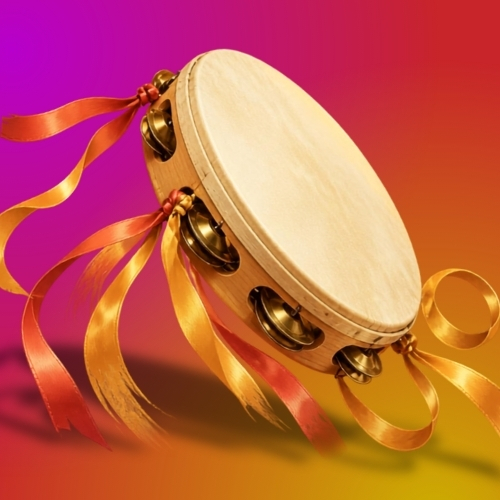

Toma el degradado magenta → coral → ámbar del ícono de la pandereta como identidad: encabezados con degradado, tarjetas blancas redondeadas y una barra de pestañas flotante. Es alegre y muy de marca, pensada en tema claro. La portada responde de inmediato «¿cuándo me toca?» y el reporte del líder usa botones grandes de un toque, con barra de progreso y la acción principal siempre visible abajo.

Mindanza22 servicios · 6 equipos
Alaben su nombre con danza; con pandero y arpa a él canten.Salmos 149:3 · RVR1960
Noviembre 2026
6 equipos + Servicio de jóvenes
Lun 2 nov · 8:00 pm · Equipo 1 y Equipo 2